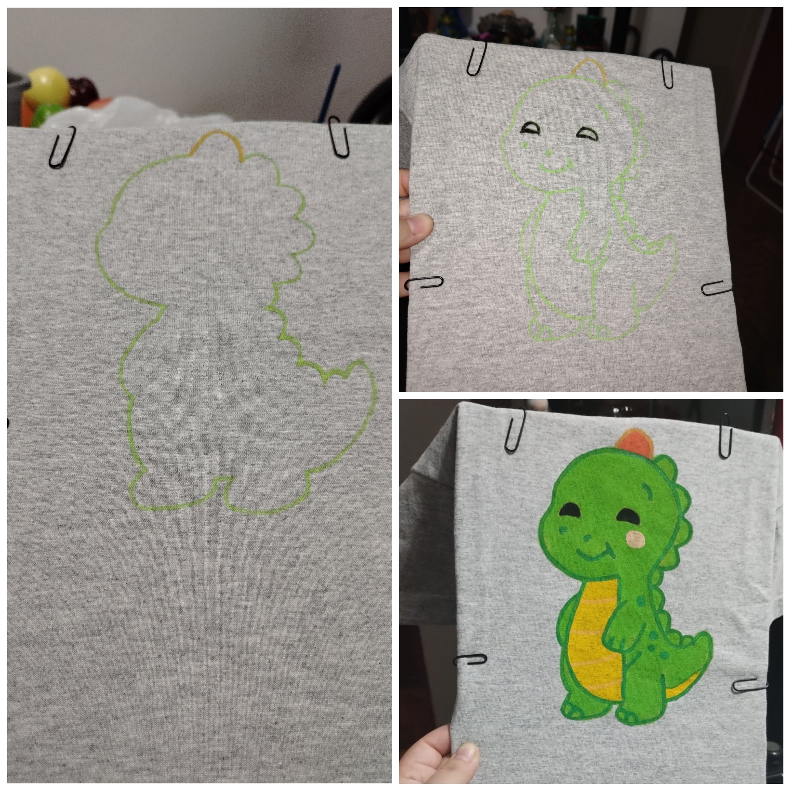
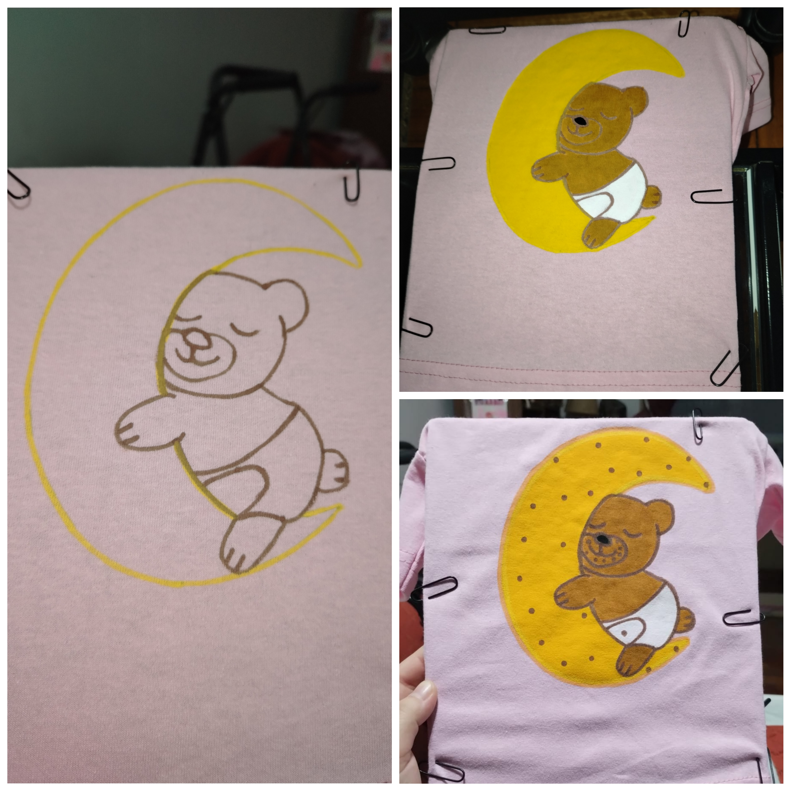
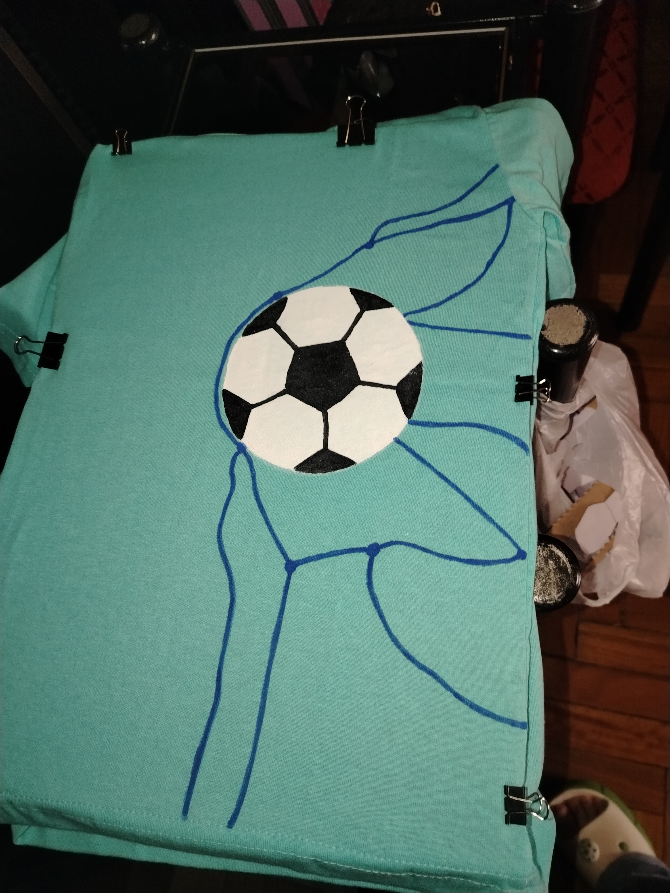
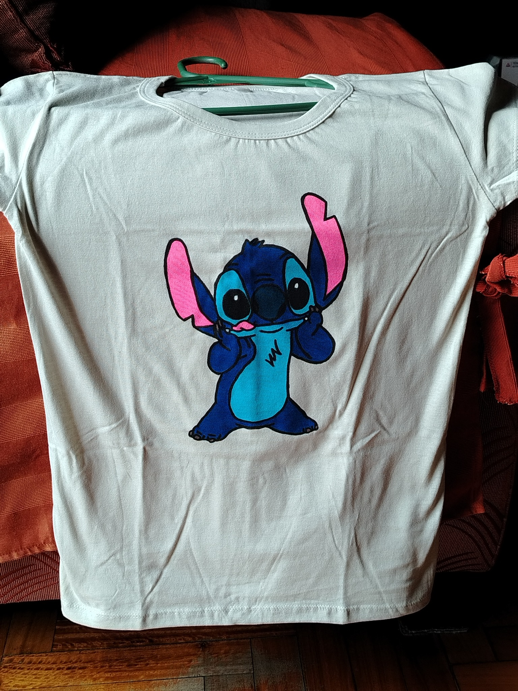
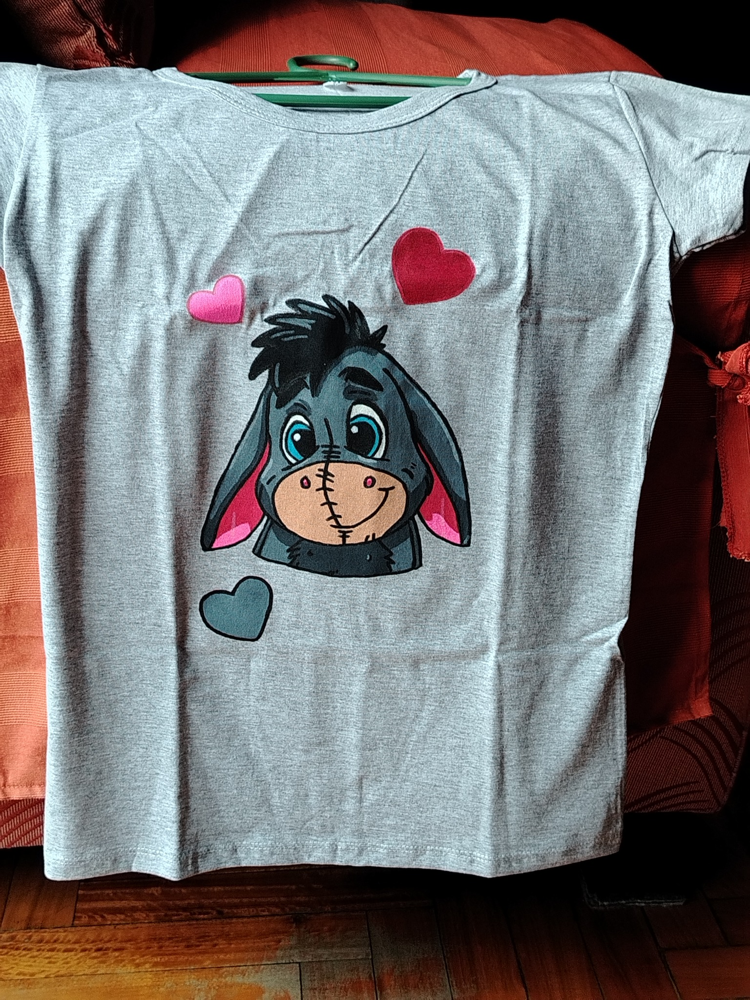
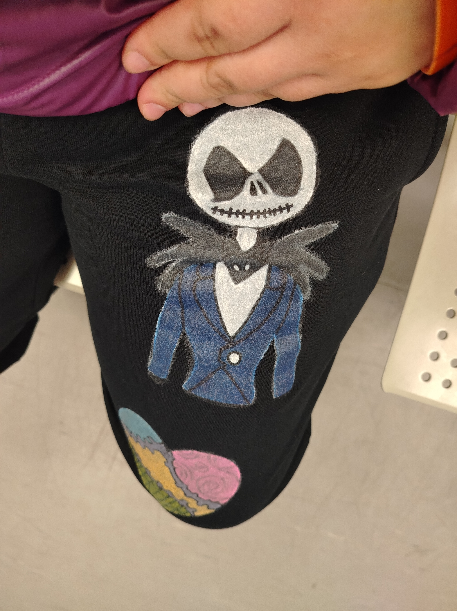
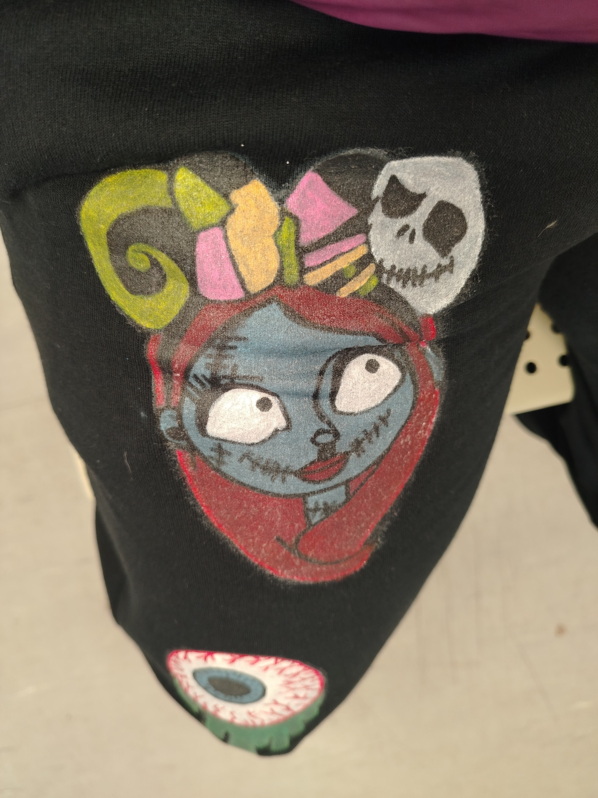

Sobre el proyecto
Cada prenda es una obra hecha a mano con dedicación, cuidando cada detalle desde el primer trazo hasta la fijación del color para que lleves un diseño único y duradero.
Arte Artesanal
Trabajo con marcadores textiles y pinceles, aplicando calor para garantizar que los colores queden fijos y resistan el uso diario.
Creatividad y Pasión
Disfruto transformar prendas en bocetos únicos, combinando personajes, motivos y pedidos personalizados.
Proceso Transparente
Me gusta mostrar el paso a paso: desde las líneas iniciales en papel o textil hasta la ilustración terminada.
Perseverancia
Cada prenda requiere tiempo, prueba y precisión. Valoro avanzar paso a paso cuidando el acabado de cada producto.
Nuestros Trabajos y Procesos

Proceso: Daga Old School
Paso a paso del delineado, aplicación de color y resultado final.

Proceso: Dinosaurio Kawaii
Paso a paso del boceto al pintado a mano sobre textil.

Proceso: Oso en la Luna
Trazado y aplicación de color sobre prenda infantil.

Remera Mickey Mouse
Ilustración en monocromo pintada a mano sobre remera negra.

Remera Pelota de Fútbol
Diseño deportivo personalizado pintado a mano.

Remera Stitch
Personaje ilustrado a mano sobre remera gris.

Remera Igor
Ilustración artesanal realizada con marcadores y pintura textil.

Pantalón Jack Skellington
Arte gótico/pop pintado a mano sobre pantalón negro.

Pantalón Sally
Detalle ilustrado a mano con terminación textil duradera.

Pantalón Personalizado Completo
Resultado final de prenda pintada con diseños exclusivos.